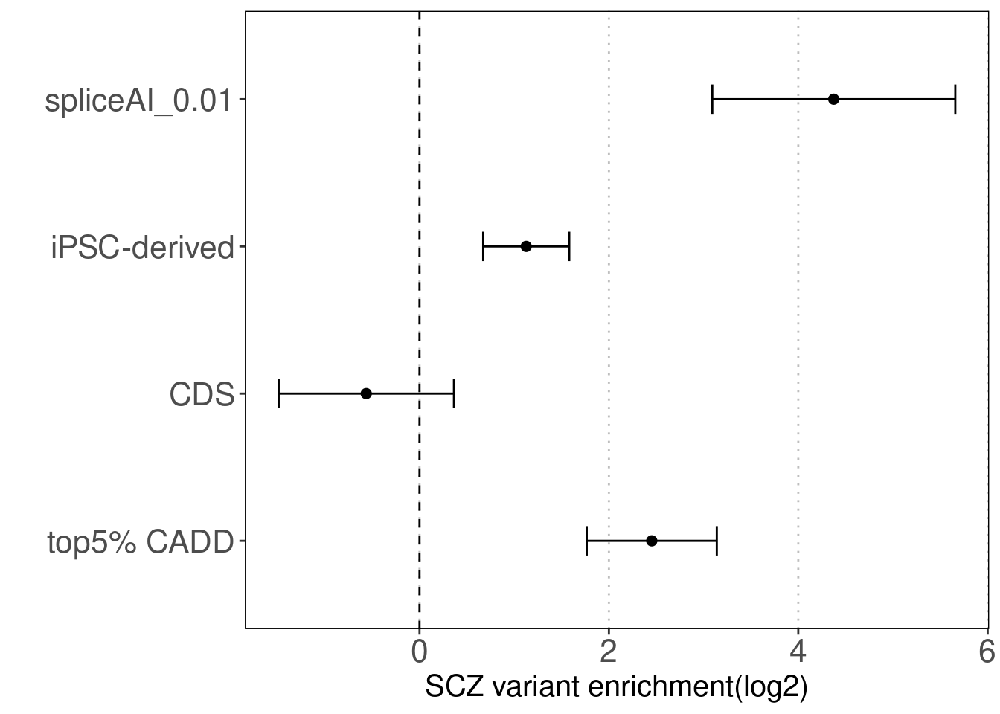
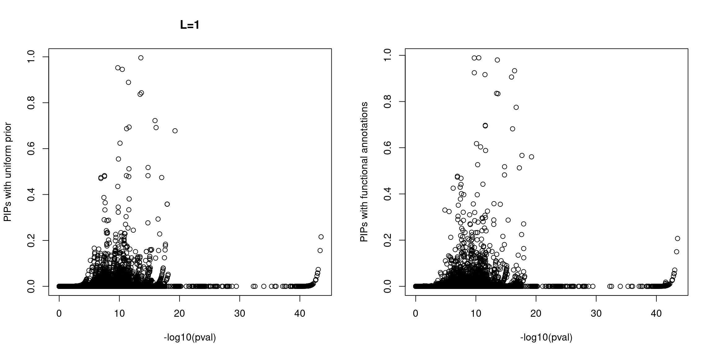
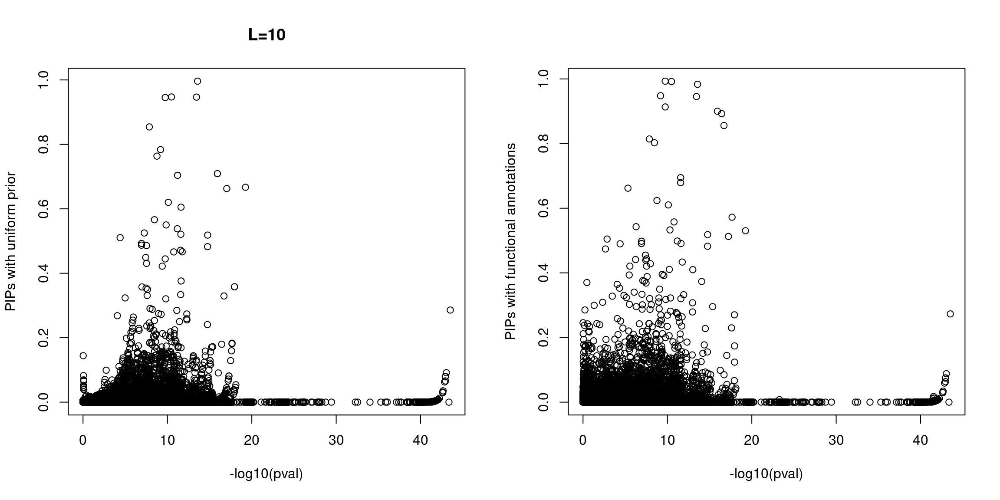
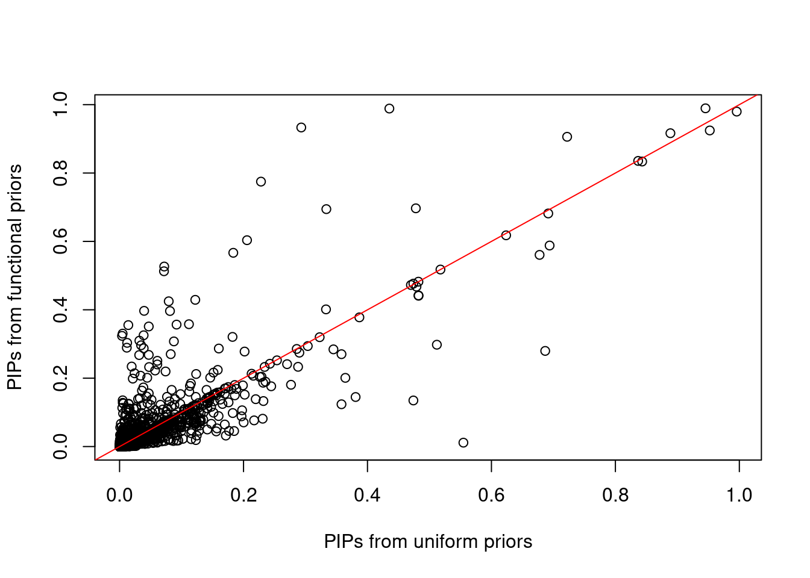
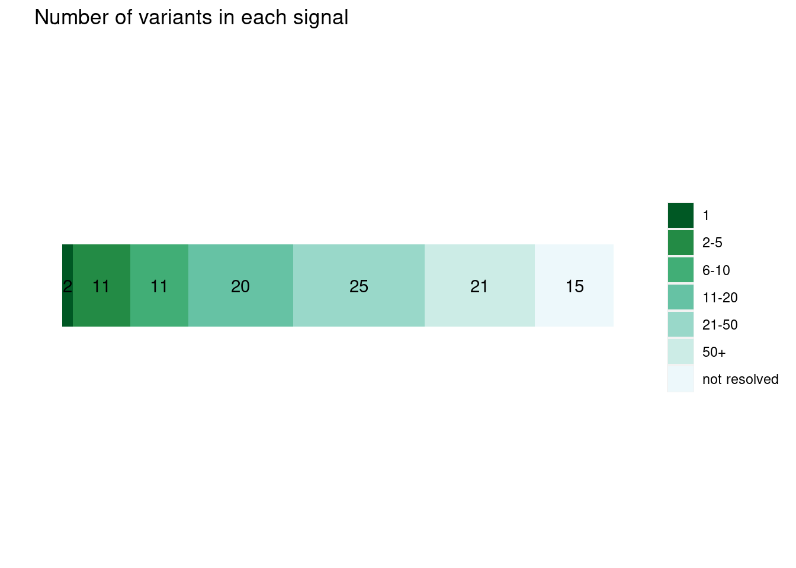
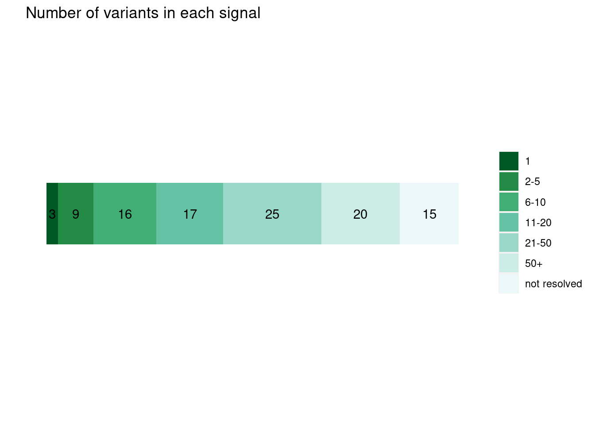

Last updated: 2022-03-24
Checks: 7 0
Knit directory: funcFinemapping/
This reproducible R Markdown analysis was created with workflowr (version 1.6.2). The Checks tab describes the reproducibility checks that were applied when the results were created. The Past versions tab lists the development history.
Great! Since the R Markdown file has been committed to the Git repository, you know the exact version of the code that produced these results.
Great job! The global environment was empty. Objects defined in the global environment can affect the analysis in your R Markdown file in unknown ways. For reproduciblity it's best to always run the code in an empty environment.
The command set.seed(20210404) was run prior to running the code in the R Markdown file. Setting a seed ensures that any results that rely on randomness, e.g. subsampling or permutations, are reproducible.
Great job! Recording the operating system, R version, and package versions is critical for reproducibility.
Nice! There were no cached chunks for this analysis, so you can be confident that you successfully produced the results during this run.
Great job! Using relative paths to the files within your workflowr project makes it easier to run your code on other machines.
Great! You are using Git for version control. Tracking code development and connecting the code version to the results is critical for reproducibility.
The results in this page were generated with repository version 5ea9a98. See the Past versions tab to see a history of the changes made to the R Markdown and HTML files.
Note that you need to be careful to ensure that all relevant files for the analysis have been committed to Git prior to generating the results (you can use wflow_publish or wflow_git_commit). workflowr only checks the R Markdown file, but you know if there are other scripts or data files that it depends on. Below is the status of the Git repository when the results were generated:
Ignored files:
Ignored: .ipynb_checkpoints/
Ignored: analysis/lab4_prepare.nb.html
Ignored: analysis/ldsc_results.nb.html
Ignored: analysis/learn_archR.nb.html
Ignored: analysis/mtsplice_finemapping_results.nb.html
Ignored: analysis/results.nb.html
Ignored: analysis/snp_finemapping_results.nb.html
Ignored: analysis/splicing.nb.html
Ignored: analysis/susie_tutorial.nb.html
Untracked files:
Untracked: SNPs_categories,png
Untracked: SNPs_categories.png
Untracked: analysis/.ipynb_checkpoints/
Untracked: analysis/asthma_bkg.Rmd
Untracked: analysis/asthma_prelim_results_archive.Rmd
Untracked: analysis/asthma_prelim_results_cp.Rmd
Untracked: analysis/asthma_results_cp.Rmd
Untracked: analysis/enhancer_gene_feature.Rmd
Untracked: analysis/feedback.Rmd
Untracked: analysis/gene_finemapping_results.Rmd
Untracked: analysis/lab4.Rmd
Untracked: analysis/lab4_prepare.Rmd
Untracked: analysis/learn_archR.Rmd
Untracked: analysis/learn_susie.Rmd
Untracked: analysis/mtsplice_finemapping_results.Rmd
Untracked: analysis/notes.Rmd
Untracked: analysis/splicing.Rmd
Untracked: analysis/susie_tutorial.Rmd
Untracked: bmi_locus1410.pdf
Untracked: code/.ipynb_checkpoints/
Untracked: code/Euro_LD_Chunks.RData
Untracked: code/ldsc_regression.sh
Untracked: code/make_plots.R
Untracked: code/run_ldsc.sh
Untracked: code/run_ldsc_with_bed.sh
Untracked: code/run_ldsc_with_bed_v2.sh
Untracked: code/run_susie.R
Untracked: code/run_torus.sh
Untracked: code/split_vcf.sh
Untracked: data/hg19_gtf_genomic_annots_ver2.gr.rds
Untracked: data/num_overlaps_finemapped_SNPs_and_ctcf.txt
Untracked: data/scz_2018
Untracked: data/scz_spliceAI_0.01_prior_output.RData
Untracked: data/scz_spliceAI_0.01_ukb_out.RData
Untracked: data/torus_enrichment_novel_annot.est
Untracked: data/torus_joint_enrichment.est
Untracked: data/torus_joint_refined_enrichment.est
Untracked: enhancer_gene_feature.rmd
Untracked: fig1_panels.pdf
Untracked: fig2.pdf
Untracked: fig_panel2.pdf
Untracked: gene_mapping.pdf
Untracked: lab4
Untracked: output/AAD/GMP_merge_stats.txt
Untracked: output/AAD/allergy/Ulirsch2019/GMP_merge_compare_old.est
Untracked: output/AAD/asthma_adult/Ulirsch2019/CD4_compare_old.est
Untracked: output/AAD/asthma_adult/Ulirsch2019/CD8_compare_old.est
Untracked: output/AAD/asthma_adult/Ulirsch2019/GMP_merge_compare_old.est
Untracked: output/AAD/asthma_child/Ulirsch2019/GMP_merge_compare_old.est
Untracked: output/LDL_ukb_L10.gif
Untracked: output/LDL_ukb_L10.pdf
Untracked: output/background_SNPs_annotated_percent.txt
Untracked: output/locus_1452.gif
Untracked: output/locus_1452.pdf
Untracked: output/splicing/torus_enrichment_joint_scz_spliceAI.est
Untracked: panel_figure2.pdf
Untracked: test.txt
Untracked: transfer/
Unstaged changes:
Deleted: .Rprofile
Modified: analysis/asthma_prelim_results.Rmd
Modified: analysis/asthma_results.Rmd
Modified: analysis/enrichment_analysis.Rmd
Modified: output/AAD/allergy/Ulirsch2019/GMP_merge_compare.est
Deleted: output/AAD/asthma/Caldero2019_diffDA_annot_percent.txt
Deleted: output/AAD/asthma/Caldero2019_stimuDA_annot_percent.txt
Deleted: output/AAD/asthma/celltype_specific_adult_lungs_torus.est
Deleted: output/AAD/asthma/diffe_adult_blood_torus.est
Deleted: output/AAD/asthma/joint_blood_immune_rest_vs_stimu.est
Deleted: output/AAD/asthma/joint_lung_vs_blood_immune_diff_torus.est
Deleted: output/AAD/asthma/joint_lung_vs_blood_immune_stimu_torus.est
Deleted: output/AAD/asthma/lung_clusters_dict.txt
Deleted: output/AAD/asthma/lung_clusters_info.txt
Deleted: output/AAD/asthma/stimu_adult_blood_torus.est
Deleted: output/AAD/asthma/torus_enrichment_all_rest.est
Deleted: output/AAD/asthma/torus_enrichment_all_stimulated.est
Deleted: output/AAD/asthma/zhang2021_annot_percent.txt
Deleted: output/AAD/asthma/zhang2021_cell_type_overlaps.txt
Deleted: output/AAD/asthma/zhang2021_peaks_per_celltype.txt
Modified: output/AAD/asthma_adult/Ulirsch2019/CD4_compare.est
Modified: output/AAD/asthma_adult/Ulirsch2019/CD8_compare.est
Deleted: output/AAD/asthma_adult/Ulirsch2019/GMP_merge_compare.est
Modified: output/AAD/asthma_child/Ulirsch2019/GMP_merge_compare.est
Deleted: output/asthma/Caldero2019_diffDA_annot_percent.txt
Deleted: output/asthma/Caldero2019_stimuDA_annot_percent.txt
Deleted: output/asthma/celltype_specific_adult_lungs_torus.est
Deleted: output/asthma/diffe_adult_blood_torus.est
Deleted: output/asthma/joint_lung_vs_blood_immune_diff_torus.est
Deleted: output/asthma/joint_lung_vs_blood_immune_stimu_torus.est
Deleted: output/asthma/lung_clusters_dict.txt
Deleted: output/asthma/lung_clusters_info.txt
Deleted: output/asthma/stimu_adult_blood_torus.est
Deleted: output/asthma/zhang2021_annot_percent.txt
Deleted: output/asthma/zhang2021_cell_type_overlaps.txt
Deleted: output/asthma/zhang2021_peaks_per_celltype.txt
Note that any generated files, e.g. HTML, png, CSS, etc., are not included in this status report because it is ok for generated content to have uncommitted changes.
These are the previous versions of the repository in which changes were made to the R Markdown (analysis/snp_finemapping_results.Rmd) and HTML (docs/snp_finemapping_results.html) files. If you've configured a remote Git repository (see ?wflow_git_remote), click on the hyperlinks in the table below to view the files as they were in that past version.
| File | Version | Author | Date | Message |
|---|---|---|---|---|
| Rmd | 5ea9a98 | Jing Gu | 2022-03-24 | update spliceAI results |
library(data.table)
library(dplyr)
library(susieR)
library(bigsnpr)
library(ggplot2)
source("code/make_plots.R")
source("code/run_susie.R")Annotations * spliceAI predictions are not tissue-specific. * The predicted delta score of a variant can be interpreted as the probrability of the variant being splice-altering.
Procedure * Build binary annotation by denoting delta score>=0.01 as 1 and detal score < 0.01 as 0. * Run TORUS jointly over spliceAI-predictions, iPSC-derived neuronal accessibility, CADD top5% and protein coding regions. * Use the derived prior probability for each SNP to further perform fine mapping with Susie.
Torus enrichment estimates
est<-read.table("output/splicing/torus_enrichment_joint_scz_spliceAI.est", header = F, skip = 2)
colnames(est)<-c("term", "estimate", "low", "high")
snp_enrichment_plot(est, y.label = c("top5% CADD", "CDS", "iPSC-derived", "spliceAI_0.01"))
Plot p-values against susie PIPs  * For an initial QC, we did not observe SNPs with high PIPs but show no significant associations for both scenarios under the assumption of one causal variant per locus. However, at L=10 we did see a substantial fractions of SNPs with high PIPs and non-sigiciant p-values for the run with functional priors.
NOTE: The following analyses were based on L=1.
Compare PIPs between uniform and functional priors  * We observed most variants have similar low PIPs with or without functional priors. However some variants show higher PIPs with functional prior while some show higher PIPs without functional priors.
Compare the sizes of credible sets
plot_cs_size(uniform_L1)  * Functional priors
plot_cs_size(annot_L1) * The numbers the stacked barplot represent the numbers of independent LD blocks within each range of credible sizes. * Overall, the credible sizes are similar between the runs with or without priors
Examine a few loci
snp beta se pval zscore locus
85212 2:200715388:G:T:rs2949006 0.100117 0.0118920 3.69e-17 -8.418853 251
46595 2:57987593:T:C:rs11682175 -0.066332 0.0095085 3.05e-12 -6.976074 171
240783 8:143316970:G:A:rs13262595 0.081672 0.0096177 1.99e-17 -8.491843 935
6764 1:8423510:G:A:rs10779702 0.057891 0.0101120 1.03e-08 -5.724980 6
97703 3:2547786:G:T:rs17194490 -0.092006 0.0131910 3.06e-12 -6.974907 279
6842 1:8484228:C:T:rs159961 -0.058975 0.0102170 7.83e-09 -5.772242 6
240768 8:143312933:C:A:rs4129585 0.082041 0.0095633 9.26e-18 -8.578733 935
97650 3:2519703:G:T:rs17014863 -0.085798 0.0123130 3.21e-12 -6.968083 279
6755 1:8418644:A:C:rs11121172 0.055245 0.0102990 8.25e-08 -5.364113 6
6802 1:8452725:C:T:rs2661863 0.056569 0.0101850 2.81e-08 -5.554148 6
X_NUM_ID_ torus_pip cs cs_purity cs_size susie_pip iPSC_derived_d
85212 2883 0.00482880 1 0.9912495 2 0.93320400 1
46595 2743 0.00023381 1 0.7441588 8 0.91643760 1
240783 1392 0.00127850 1 0.8849128 3 0.77486460 1
6764 4052 0.00482880 1 0.9317116 19 0.39688087 1
97703 6588 0.00058581 1 0.7786948 17 0.30755800 0
6842 4166 0.00127850 1 0.9317116 19 0.13671204 1
240768 1373 0.00010706 1 0.8849128 3 0.13482170 0
97650 6513 0.00023381 1 0.7786948 17 0.11716620 1
6755 4043 0.00816960 1 0.9317116 19 0.09668983 0
6802 4114 0.00221670 1 0.9317116 19 0.07165940 0
CADD_d CDS_d spliceAI0.01_d_d all_d
85212 0 0 1 2
46595 0 0 0 1
240783 1 0 0 2
6764 0 0 1 2
97703 1 0 0 1
6842 1 0 0 2
240768 0 0 0 0
97650 0 0 0 1
6755 1 1 1 3
6802 0 0 1 1 snp beta se pval zscore locus
85212 2:200715388:G:T:rs2949006 0.100117 0.011892 3.69e-17 -8.418853 251
85213 2:200716119:A:C:rs796364 0.099031 0.011912 9.41e-17 -8.313549 251
X_NUM_ID_ torus_pip cs cs_purity cs_size susie_pip iPSC_derived_d
85212 2883 0.00482880 1 0.9912495 2 0.93320400 1
85213 2884 0.00023381 1 0.9912495 2 0.01895903 1
CADD_d CDS_d spliceAI0.01_d_d all_d
85212 0 0 1 2
85213 0 0 0 1 snp beta se pval zscore locus
85212 2:200715388:G:T:rs2949006 0.100117 0.011892 3.69e-17 -8.418853 251
85213 2:200716119:A:C:rs796364 0.099031 0.011912 9.41e-17 -8.313549 251
X_NUM_ID_ torus_pip cs cs_purity cs_size susie_pip iPSC_derived_d
85212 2883 0.00482880 1 0.9912495 2 0.93320400 1
85213 2884 0.00023381 1 0.9912495 2 0.01895903 1
CADD_d CDS_d spliceAI0.01_d_d all_d
85212 0 0 1 2
85213 0 0 0 1
sessionInfo()R version 4.0.4 (2021-02-15)
Platform: x86_64-pc-linux-gnu (64-bit)
Running under: Scientific Linux 7.4 (Nitrogen)
Matrix products: default
BLAS/LAPACK: /software/openblas-0.3.13-el7-x86_64/lib/libopenblas_haswellp-r0.3.13.so
locale:
[1] LC_CTYPE=en_US.UTF-8 LC_NUMERIC=C
[3] LC_TIME=en_US.UTF-8 LC_COLLATE=en_US.UTF-8
[5] LC_MONETARY=en_US.UTF-8 LC_MESSAGES=en_US.UTF-8
[7] LC_PAPER=en_US.UTF-8 LC_NAME=C
[9] LC_ADDRESS=C LC_TELEPHONE=C
[11] LC_MEASUREMENT=en_US.UTF-8 LC_IDENTIFICATION=C
attached base packages:
[1] stats graphics grDevices utils datasets methods base
other attached packages:
[1] RColorBrewer_1.1-2 ggplot2_3.3.3 bigsnpr_1.9.11 bigstatsr_1.5.6
[5] susieR_0.11.92 dplyr_1.0.4 data.table_1.14.2
loaded via a namespace (and not attached):
[1] Rcpp_1.0.8 lattice_0.20-41 assertthat_0.2.1 rprojroot_2.0.2
[5] digest_0.6.27 foreach_1.5.1 utf8_1.2.2 R6_2.5.1
[9] bigsparser_0.6.0 plyr_1.8.6 evaluate_0.14 highr_0.8
[13] pillar_1.5.0 flock_0.7 rlang_1.0.1 rstudioapi_0.13
[17] irlba_2.3.3 whisker_0.4 jquerylib_0.1.3 Matrix_1.4-0
[21] rmarkdown_2.7 labeling_0.4.2 bigparallelr_0.3.2 stringr_1.4.0
[25] munsell_0.5.0 mixsqp_0.3-43 compiler_4.0.4 httpuv_1.5.5
[29] xfun_0.21 pkgconfig_2.0.3 htmltools_0.5.1.1 tidyselect_1.1.1
[33] tibble_3.0.6 workflowr_1.6.2 codetools_0.2-18 matrixStats_0.58.0
[37] reshape_0.8.8 fansi_1.0.2 crayon_1.4.1 withr_2.4.3
[41] later_1.1.0.1 grid_4.0.4 jsonlite_1.7.2 gtable_0.3.0
[45] lifecycle_1.0.0 DBI_1.1.1 git2r_0.28.0 magrittr_2.0.1
[49] scales_1.1.1 cli_3.2.0 stringi_1.5.3 farver_2.1.0
[53] fs_1.5.0 promises_1.2.0.1 doParallel_1.0.16 bslib_0.2.4
[57] ellipsis_0.3.2 generics_0.1.0 vctrs_0.3.8 cowplot_1.1.1
[61] iterators_1.0.13 tools_4.0.4 glue_1.6.1 purrr_0.3.4
[65] parallel_4.0.4 yaml_2.2.1 colorspace_2.0-2 bigassertr_0.1.5
[69] knitr_1.31 sass_0.3.1